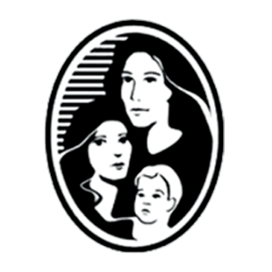
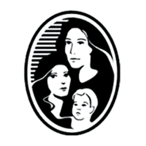
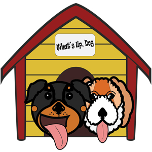
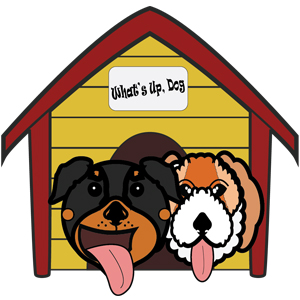
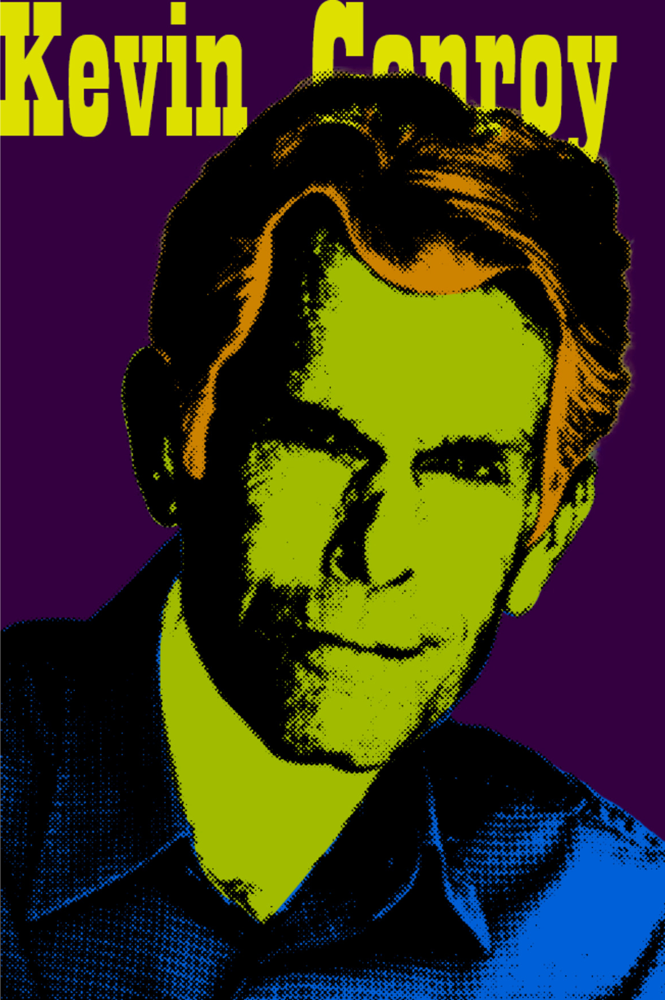
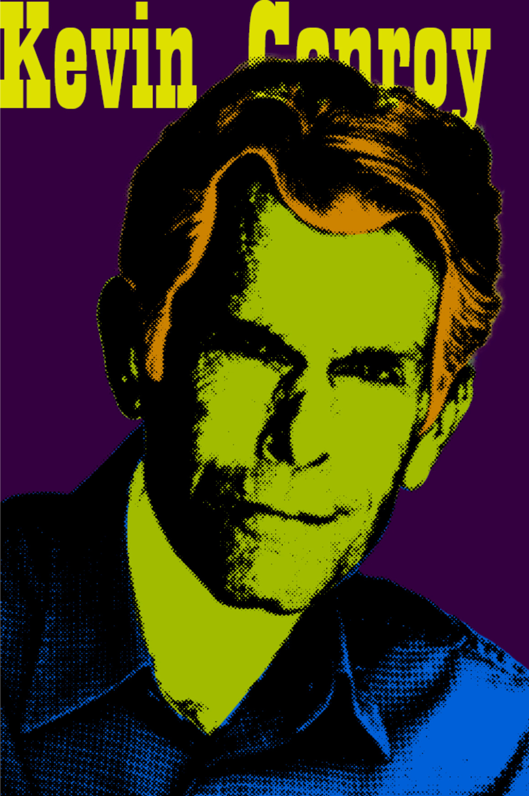

Services I Can Provide
Web Development
Web development refers to the process of creating and maintaining websites and web applications. It involves various tasks such as designing the layout and user interface (UI), writing code for functionality and interactivity, integrating databases, and ensuring the website is optimized for performance and security.
Web development encompasses both the front-end and back-end aspects of a website. The front-end, also known as client-side development, focuses on creating the visible parts of a website that users interact with directly. This includes writing HTML (Hypertext Markup Language) for structuring the content, CSS (Cascading Style Sheets) for styling and layout, and JavaScript for adding interactivity and dynamic behavior.
On the other hand, back-end development, or server-side development, involves building the underlying infrastructure that powers a website. It includes writing server-side code using languages like Python, PHP, Ruby, or JavaScript (with Node.js) to handle tasks such as database operations, user authentication, and server-side logic.
Web development often involves working with various technologies, frameworks, and tools depending on the specific requirements of the project. These may include content management systems (CMS) like WordPress or Drupal, front-end frameworks like React or Angular, back-end frameworks like Django or Ruby on Rails, and databases such as MySQL or MongoDB.
In addition to the technical aspects, web development also involves considerations for user experience (UX) design, accessibility, search engine optimization (SEO), and security. Web developers need to ensure that websites are responsive, perform well across different devices and browsers, and are accessible to users with disabilities. They also implement measures to protect user data and prevent security vulnerabilities.
Overall, web development is a multidisciplinary field that combines creativity, coding skills, and problem-solving abilities to create functional and visually appealing websites and web applications.
WordPress---$370/month (Can Be Negotiated)
WordPress is a popular content management system (CMS) and website creation tool. It is an open-source software that allows users to build and manage websites, blogs, and online stores without requiring advanced coding skills.
WordPress is widely used by individuals, businesses, and organizations of all sizes. It has become the platform of choice for bloggers, small businesses, news websites, e-commerce stores, and even large-scale enterprise websites due to its ease of use, flexibility, and robust ecosystem.
Examples of WordPress Websites I've worked on: 



Full-Stack Programming---$400/month (Can Be Negotiated)
Full-stack programming refers to the development of both the front-end (client-side) and back-end (server-side) components of a web application. A full-stack developer is proficient in multiple technologies and frameworks required to build both the user-facing interface and the underlying server infrastructure.
Being a full-stack developer offers the advantage of having a broader skill set and the ability to work on different parts of a web application. It allows developers to understand the complete architecture of a project, collaborate effectively with other team members, and potentially take on a more versatile role in software development projects.


Graphic Design
Graphic design is a creative discipline that involves the visual communication and presentation of ideas and information. It encompasses the use of typography, imagery, color, layout, and other visual elements to create visually appealing and effective designs for various purposes.
Graphic designers utilize their artistic and technical skills to convey messages, evoke emotions, and solve visual problems. They work with both digital and print media, creating designs for a wide range of applications, including branding, advertising, packaging, publications, websites, user interfaces, and more.
Graphic design requires creativity, attention to detail, and a strong understanding of visual communication principles. Designers often collaborate with clients, marketing teams, and other professionals to understand project requirements and deliver designs that effectively communicate messages and achieve desired outcomes.
With the advancement of technology, graphic design has expanded to include digital design, motion graphics, interactive media, and user experience design. Graphic designers may use various software tools, including Adobe Creative Suite (such as Photoshop, Illustrator, and InDesign), Sketch, Figma, or Canva, to create and refine their designs.
Logos---$20/h for a max of 10 hours
For logos, I use Illustrator to create the shape of the work I do. This way, I can resize it how ever much I wanted. Therefore, the client can use the logo in any format they wanted. I always make sure to give the client multipe concepts to choose from, so I can give them what they're asking for without too many miscommunications. I work fast in order to get the client what they want as quickly as possible. Most clients should expect concept examples within a two day period.
Examples of Logos I've created: 

Posters---$25/h for a max of 10 hours
For posters, I use a combination of Illustrator and Photoshop to create the designs of the work I do. This way, I can expand the range of potential styles of art that a client could ask for. Therefore, the client can get the poster they asked for with a design that fits whatever they're advertising. I always make sure to give the client multipe concepts to choose from, so I can give them what they're asking for without too many miscommunications. I work fast in order to get the client what they want as quickly as possible. Most clients should expect concept examples within a two-three day period.
Examples of Posters I've created:
 

Cover Art---$30/h for a max of 10 hours
For cover art, I use a combination of Illustrator, Photoshop, and sometimes InDesign to create the in-depth illustrations and designs for the work I do. This way, I can expand the range of potential company branding/identity, formats, and styles of art that a client could ask for. Therefore, the client can use the cover art in any business capacity they wanted. This can include anything such as magazines, books, movies, tv shows/channels, albums, CD's or even merchandise. I always make sure to give the client multipe concepts to choose from, so I can give them what they're asking for without too many miscommunications. I work fast in order to get the client what they want as quickly as possible. Most clients should expect concept examples within a three-four day period.